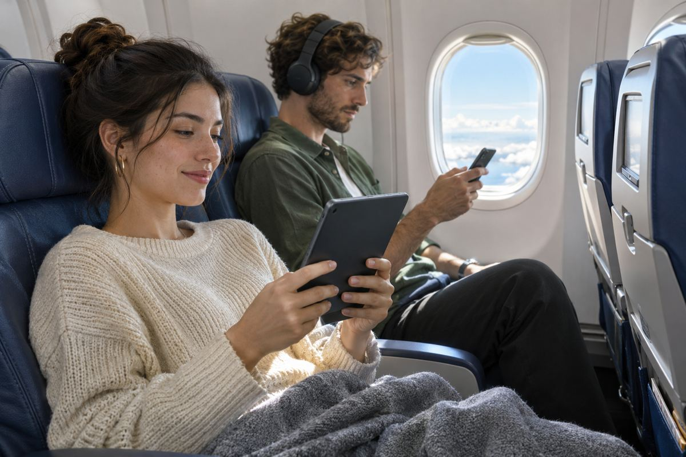

항공 / EXPLAINED
사우스웨스트, 오스틴발 특별편에서 스타링크로 게임 생중계
트위치콘을 앞두고 기내에서 대회를 열었다. 기단 전체 설치 목표는 2027년 가을이다.

미국 사우스웨스트항공은 오스틴에서 샌디에이고로 향한 스타링크 장착 특별편에서 게임 대회를 열고 트위치로 실시간 중계했다고 현지 11월 12일 발표했다. 회사가 제시한 비행 고도는 3만5000피트로, 약 10.7km다. 트위치콘을 앞두고 참가 창작자들이 기내에서 겨룬 행사다. 중계가 이루어졌다는 것은 회사 발표로 확인되지만, 자료에는 이륙 시각과 중계 전 구간에서 측정한 통신 기록이 공개되지 않았다.
사우스웨스트는 미국을 중심으로 정기 여객편을 운영한다. 이번 사례에는 미리 장비를 설치한 특별편이 사용됐다. 회사는 2027년 가을에 기단 전체에 스타링크를 갖추는 것을 목표로 제시했다. 따라서 오늘 표를 검색하는 승객에게 직접 영향을 주는 것은 완료 목표보다 예약한 항공편에 어떤 기체가 배정되고 어떤 인터넷 서비스가 제공되는지다. 기종이 같아도 설치 작업을 끝낸 개별 항공기와 아직 작업 전인 항공기가 섞일 수 있다.
기내에서 영상 하나를 보는 것과 게임을 하며 중계하는 것은 같은 인터넷을 쓰더라도 요구 조건이 다르다. 미리 받아 둔 영상 데이터는 잠깐 느려져도 버퍼가 남아 있으면 끊김 없이 재생된다. 온라인 게임은 조작한 결과가 서버를 돌아 화면에 반영되기까지의 시간이 중요하다. 중계에는 기내에서 외부로 영상을 내보내는 업로드가 필요하다. 다운로드 최고 속도 하나로 이 세 상황을 설명하기 어렵다.
스타링크는 저궤도 위성을 이용한다. 객실 안에서는 승객의 기기가 기내 무선망에 연결되고, 항공기 단말이 위성과 통신해 지상의 인터넷망에 닿는다. 위성이 지표에 가까울수록 전파가 오가는 거리와 그에 따른 지연을 줄일 여지가 있다. 실제 게임에서는 이후 연결되는 서버의 위치, 순간적인 지연의 흔들림, 같은 무선망을 쓰는 기기 수까지 영향을 준다. 행사 영상이 재생됐다는 사실만으로 모든 참여자의 연결이 항상 일정했다고 판단할 수는 없다.
편집부가 이번 행사를 주목하는 이유는 항공사가 기내망을 단순한 열람이나 메시지 전송을 넘어 양방향 활동에도 쓰는 모습을 공개했기 때문이다. 다만 특별편에 참가한 기기와 접속 인원, 정기편에서 좌석이 찼을 때의 속도, 연결이 약해진 구간의 길이는 자료에 없다. 혼잡한 항공편에서 회의나 게임을 계획하는 독자라면 이 시연을 자기 좌석의 품질 보장으로 해석하기 어렵다. 항공권을 고를 때는 예약편의 장비 여부와 해당 여정에서 적용되는 접속 조건을 따로 확인할 수 있다.
3만5000피트는 행사 당시의 고도이지, 기내 인터넷을 사용할 수 있는 최저 고도로 공개한 수치가 아니다. 비행기가 지상에 있을 때와 이착륙 중에도 연결할 수 있는지는 항공사의 서비스 정책과 해당 지역의 허가 조건에 달려 있다. 게임 중 연결이 끊겼다가 돌아오는 상황에서는 다시 접속할 때 걸리는 시간도 중요하다. 행사 자료에는 이런 비행 단계별 이용 조건이나 복구 시간이 나와 있지 않다.
트위치콘은 11월 13~15일 샌디에이고에서 열린다. 이 행사 날짜와 항공사의 12일 발표, 2027년 가을 기단 개조 목표는 서로 다른 일정이다. 특별편에서 중계가 이뤄졌다는 사실은 확인됐고, 일반 승객이 이용할 수 있는 설치 편의 전체 목록과 각 기체의 전환 시점은 이번 발표에 담기지 않았다.